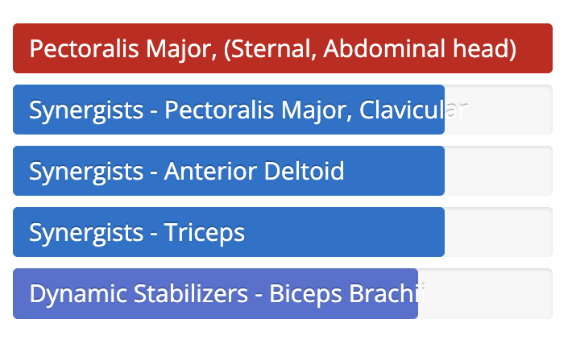
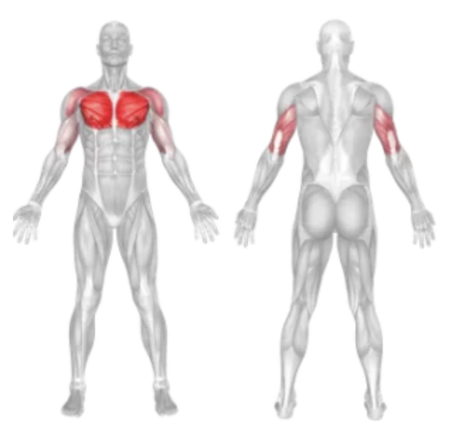

Setup
- Set a decline bench at a 15–30 degree angle.
- Grab a pair of dumbbells and sit on the bench with your feet secured under the support pads.
- Lie back with the dumbbells held at shoulder level, palms facing forward, and elbows bent at about a 90-degree angle.
Execution
- Press Upward Exhale as you press the dumbbells upward in a smooth, controlled motion until your arms are fully extended (but not locked).
- Lower Slowly Inhale as you lower the dumbbells back to the starting position, maintaining control and ensuring the elbows stay slightly below chest level for a deep stretch.
- Repeat for the desired number of repetitions.
Tips for Effectiveness
- Focus on Form Prioritize proper form over heavy weights to maximize effectiveness and safety.
- Squeeze at the Top Contract your chest muscles at the peak of the movement for optimal engagement.
- Controlled Tempo Use a slow and controlled tempo to maintain tension on the chest muscles.
- Pair with Incline and Flat Presses: Combine with other bench press variations for complete chest development.
Benefits of Decline Dumbbell Press
- Lower Chest Development Specifically targets the sternal head, creating a more balanced and sculpted chest.
- Improved Range of Motion Dumbbells allow for a deeper stretch and greater contraction compared to barbell variations.
- Symmetry and Balance: Each side works independently, helping to correct muscle imbalances.
- Strength Transfer: Improves pressing power for movements like dips and push-ups.
- Joint-Friendly Option: Offers a natural movement path, reducing stress on the shoulders compared to some barbell exercises.
Muscle Worked in the İncline Cable Fly

